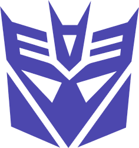

Historia maki
Historia Transformersów zaczęła się w latach 80 XX wieku w Japonii.
Tamtejszy producent zabawek, firma Takara, zaprojektowała i wypuściła na rynek, w tym amerykański, linie zabawek,
Diaclone i Micro Change. Jednak nie zdobyły one przebojem amerykańskiego rynku.
Wszystko zmieniło się gdy w 1983 roku na Targi Zabawek w Tokio pojechał przedstawiciel firmy Hasbro.
Amerykanie stwierdzili, że zmieniające się różne pojazdy i przedmioty zabawki będą w stanie dobrze sprzedać i
popisali z firmą Takara kontrakt na dostarczenie zabawek.
Jednak do pełnego sukcesu potrzeba było jeszcze stworzyć atrakcyjną markę,
pod którą można by było te zabawki sprzedać. W tym celu została zatrudniona agencja marketingowa
Griffin Bacal z Nowego Jorku. Agencja ta stworzyła nazwę marki,
symbole frakcji,

a jeden z twórców komiksów Marvela, Bob Budiansky wymyślił cały
fikcyjny świat w którym dwie frakcje robotów z planety Cybertron prowadzą od wielu milionów lat wojnę.
Następnie wystarczyło jeszcze stworzyć serial animowany dla dzieci w sam raz na poranną sobotą ramówkę
i przepis na udany biznes był gotowy.